0
Setup
A subreddit admin designates which mods are Reviewers
1
Configure Reviewers in ShadowMod settings
From the subreddit feed, open Mod Tools and choose ShadowMod settings.
Enter the Reddit usernames of mods who will act as Reviewers. Everyone else defaults to the Observer role.
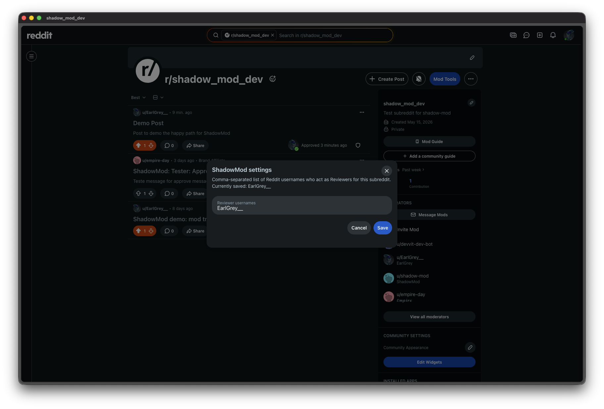
1
Observer flow
A mod-in-training records their call without touching the post
What is an Observer? A mod whose call is recorded but not executed. The post stays in its original state. No action is taken until a real mod action occurs.
2
A new post arrives in the subreddit
The Observer receives a notification and opens the post as they normally would.
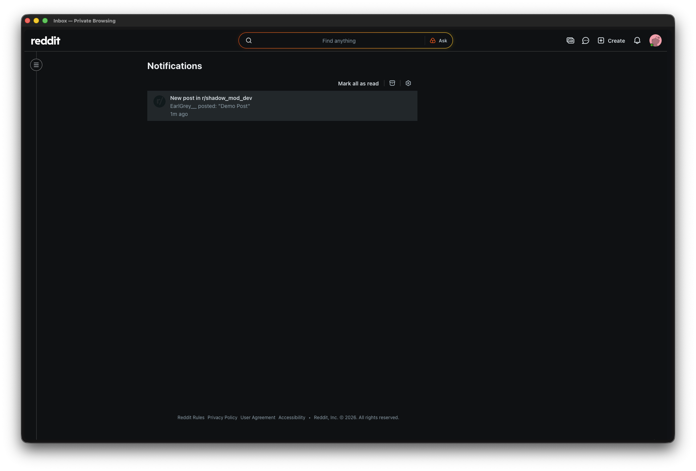
3
Open Mod Tools on the post
The standard Reddit mod tools menu now includes two new entries: Record observation and Record review.
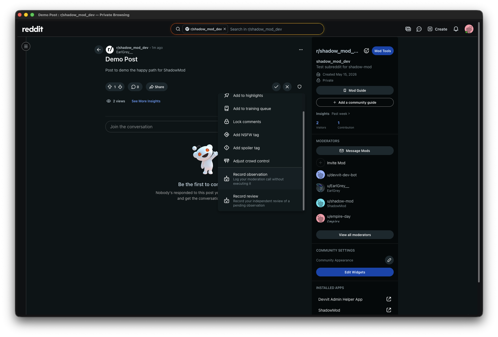
4
Record an Observation
The Observer selects an action (e.g. Approve, Remove) and writes their reasoning. This is recorded privately — the post is untouched.
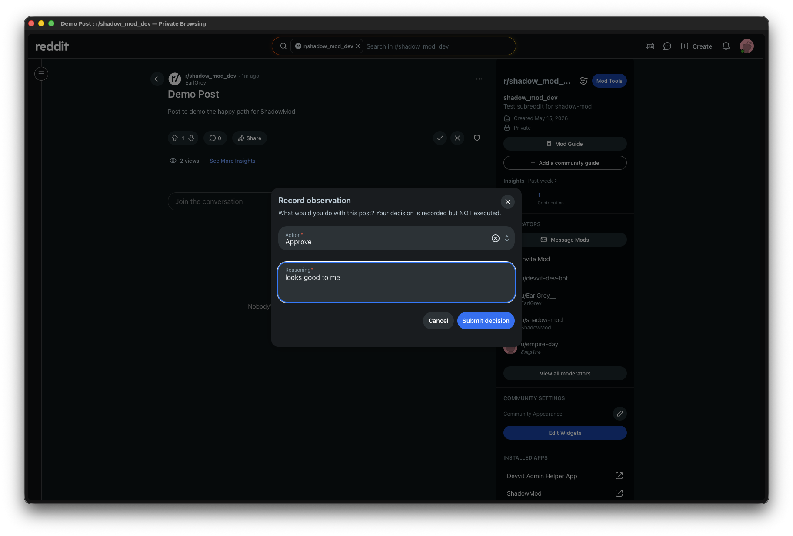
5
Observation confirmed
A toast confirms the Observation is saved. ShadowMod notifies a Reviewer that this post is pending a blind review.
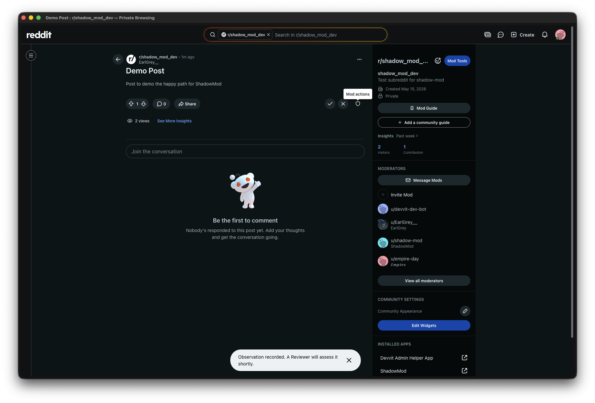
2
Reviewer flow
An experienced mod records their independent call, blind to the Observer's decision
What is a Reviewer? A mod designated in settings whose call provides the comparison baseline. They never see the Observer's reasoning until the Comparison report is generated.
6
Check the Review queue
From the subreddit feed, the Reviewer opens Mod Tools and selects Review queue to see posts awaiting their blind review.
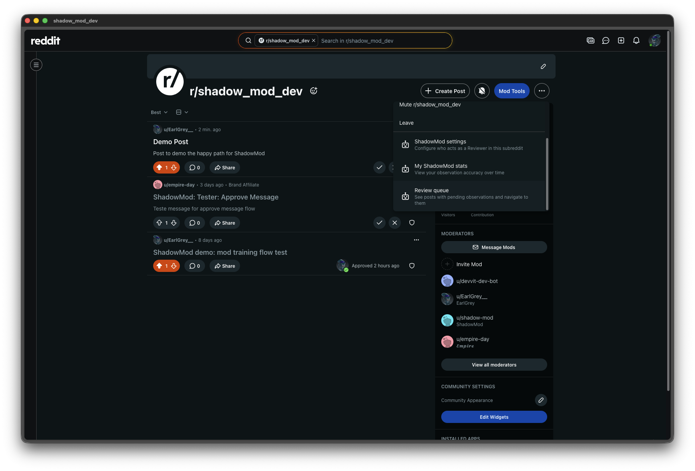
7
Review queue lists pending Observations
Each entry shows the post title and which Observer submitted it. The Reviewer picks a post to review.
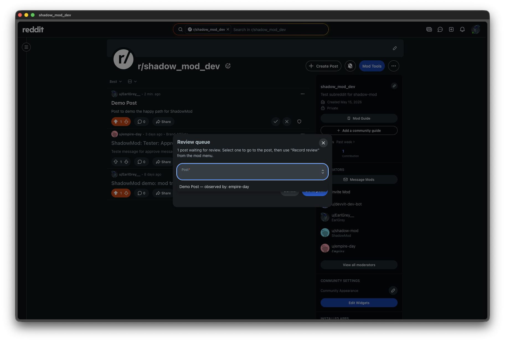
8
Role guard keeps workflows clean
If a Reviewer accidentally clicks Record observation, ShadowMod redirects them with a clear prompt. This keeps Observer and Reviewer records separate and uncontaminated.
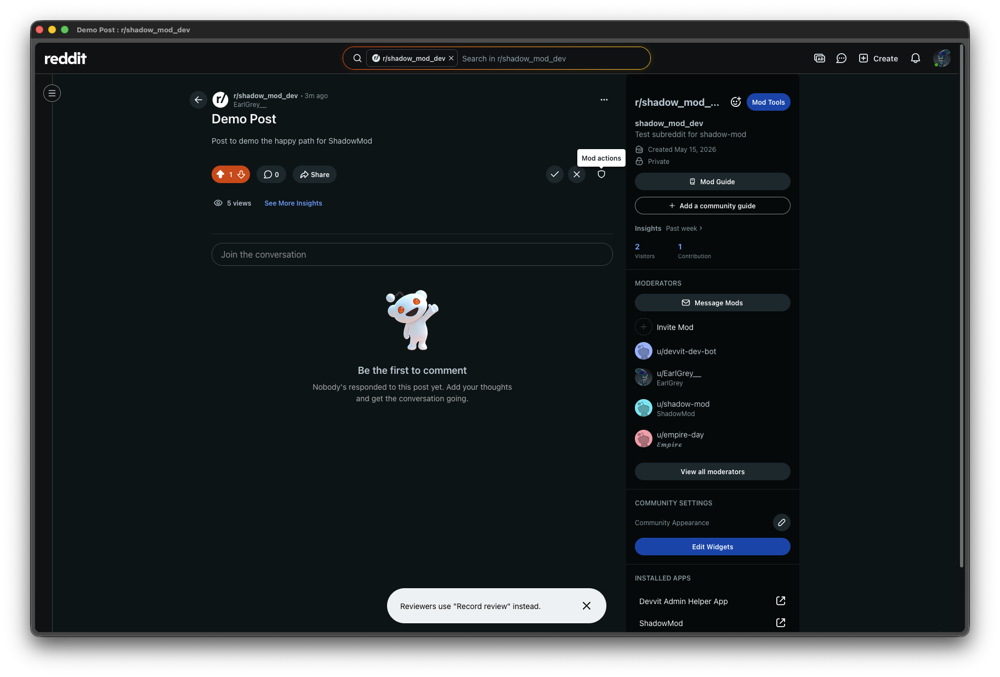
9
Record a Review
The Reviewer selects their independent action and reasoning — with no visibility into what the Observer chose. Blind by design.
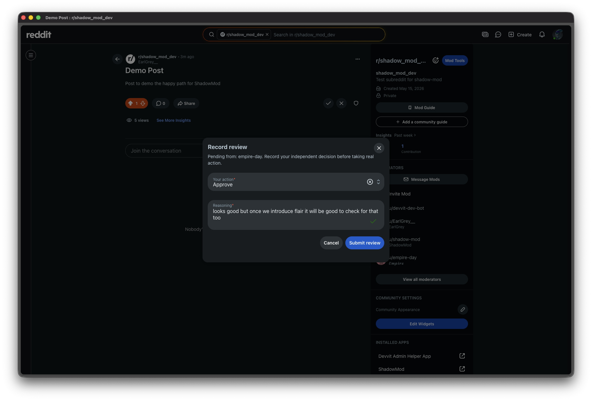
10
Review confirmed
The Review is saved. ShadowMod now waits for the real mod action on the post before generating the Comparison report.
3
Comparison report
The real action triggers an automatic side-by-side breakdown delivered to each mod's modmail
11
A real mod action is taken on the post
Any mod (or AutoModerator) takes the actual moderation action. ShadowMod detects it via the
onModAction trigger and locks in the Outcome.
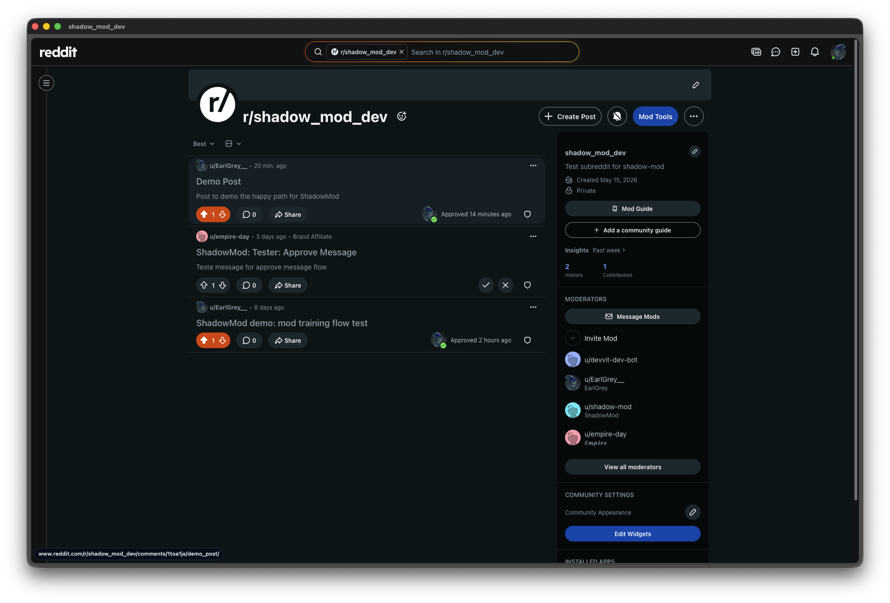
12
Comparison report arrives in modmail
Both the Observer and Reviewer receive a personalised report showing their call, the other mod's call, the real Outcome, and whether they matched. No spreadsheets, no manual review — it happens automatically.
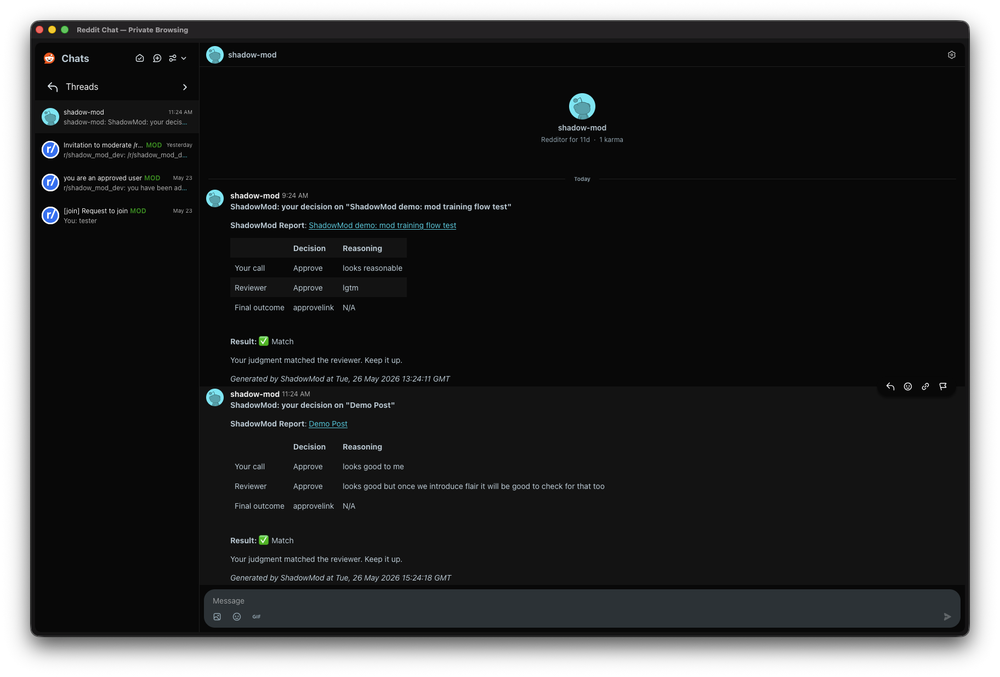
4
Observer accuracy stats
Track alignment over time across all completed reviews
13
Per-Observer accuracy summary
Moderators can pull up a live accuracy summary for any Observer — showing overall alignment with Reviewers and real Outcomes across all Comparison reports in the subreddit.
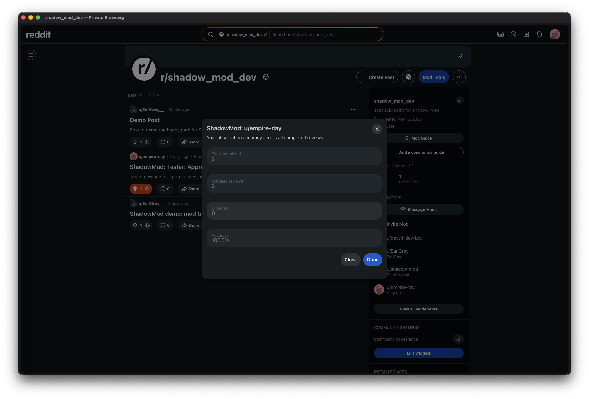